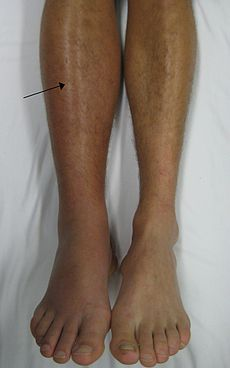

Deep vein thrombosis
| Deep vein thrombosis | |
|---|---|
| 
DVT in the right leg with swelling and redness
|
|
| Classification and external resources | |
| Specialty | Hematology |
| ICD-10 | I80.2 |
| ICD-9-CM | 453.40 |
| DiseasesDB | 3498 |
| MedlinePlus | 000156 |
| eMedicine | med/2785 |
| Patient UK | Deep vein thrombosis |
| MeSH | D020246 |
{kind=link}
Deep vein thrombosis, or deep venous thrombosis, (DVT) is the formation of a blood clot (thrombus) within a deep vein,[a] predominantly in the legs. Non-specific signs may include pain, swelling, redness, warmness, and engorged superficial veins. Pulmonary embolism, a potentially life-threatening complication, is caused by the detachment (embolization) of a clot that travels to the lungs. Together, DVT and pulmonary embolism constitute a single disease process known as venous thromboembolism. Post-thrombotic syndrome, another complication, significantly contributes to the health-care cost of DVT. Prevention options for at-risk individuals include early and frequent walking, calf exercises, anticoagulants, aspirin, graduated compression stockings, and intermittent pneumatic compression.
In 1856, German pathologist Rudolf Virchow postulated the interplay of three processes resulting in venous thrombosis, now known as Virchow's triad: a decreased blood flow rate (venous stasis), increased tendency to clot (hypercoagulability), and changes to the blood vessel wall. DVT formation typically begins inside the valves of the calf veins, where the blood is relatively oxygen deprived, which activates certain biochemical pathways. Several medical conditions increase the risk for DVT, including cancer, trauma, and antiphospholipid syndrome. Other risk factors include older age, surgery, immobilization (as with bed rest, orthopedic casts, and sitting on long flights), combined oral contraceptives, pregnancy, the postnatal period, and genetic factors. Those genetic factors include deficiencies with antithrombin, protein C, and protein S, the mutation of Factor V Leiden, and the property of having a non-O blood type. The rate of new DVTs increases dramatically from childhood to old age; in adulthood, about 1 in 1000 adults develops it annually.
Individuals suspected of having DVT may be assessed using a clinical prediction rule such as the Wells score. A D-dimer test may also be used to assist with excluding the diagnosis (because of its high sensitivity) or to signal a need for further testing. Diagnosis is most commonly done with ultrasound of the suspected veins. Anticoagulation is the standard treatment; typical medications include a low-molecular-weight heparin and a vitamin K antagonist. Wearing graduated compression stockings appears to reduce the risk of post-thrombotic syndrome.
Signs and symptoms[edit]
{kind=link}
Common signs and symptoms of DVT include pain or tenderness, swelling, warmth, redness or discoloration, and distention of surface veins, although about half of those with the condition have no symptoms.[1] Signs and symptoms alone are not sufficiently sensitive or specific to make a diagnosis, but when considered in conjunction with known risk factors can help determine the likelihood of DVT.[2] In most suspected cases, DVT is ruled out after evaluation,[3] and symptoms are more often due to other causes, such as cellulitis, Baker's cyst, musculoskeletal injury, or lymphedema.[4] Other differential diagnoses include hematoma, tumors, venous or arterial aneurysms, and connective tissue disorders.[5]
A severe and uncommon form of DVT, phlegmasia cerulea dolens, may develop in association with a life-threatening illness. It is characterized by an acute and almost total venous occlusion of the entire extremity outflow, including the iliac and femoral veins. The leg is usually painful, cyanosed (blue from lack of oxygen), and edematous (filled with fluid), which may result in venous gangrene.[6][7]
Causes[edit]
{kind=link}
The three factors of Virchow's triad—venous stasis, hypercoagulability, and changes in the endothelial blood vessel lining (such as physical damage or endothelial activation)—contribute to DVT and are used to explain its formation.[8][9] Other related causes include activation of immune system components, the state of microparticles in the blood, the concentration of oxygen, and possible platelet activation.[10] Various risk factors contribute to DVT, though many at high risk never develop it.[11]
Acquired risk factors include the strong risk factor of older age,[9][11] which alters blood composition to favor clotting. Other important acquired risk factors include major surgery and trauma, both of which may increase the risk because of tissue factor from outside the vascular system entering the blood.[8] In orthopedic surgery, venous stasis may be temporarily provoked by a cessation of blood flow as part of the procedure.[10] Cancer can grow in and around veins, causing venous stasis, and can also stimulate increased levels of tissue factor. Pregnancy causes blood to favor clotting, and in the postpartum, placental tearing releases substances that favor clotting. Oral contraceptives[b] and hormonal replacement therapy increase the risk through a variety of mechanisms, including altered blood coagulation protein levels and reduced fibrinolysis.[10]
The disease term venous thromboembolism (VTE) includes the development of either DVT or pulmonary embolism (PE).[14][15] Genetic factors that increase the risk of VTE include deficiencies of three proteins that normally prevent blood from clotting—protein C, protein S, and antithrombin—in addition to non-O blood type and mutations in the factor V and prothrombin genes. Deficiencies in antithrombin, protein C, and protein S are rare but strong, or moderately strong, risk factors.[8][10] These three thrombophilia[c] increase the risk of VTE by about 10 times.[16] Factor V Leiden, which makes factor V resistant to inactivation by activated protein C,[18] and the genetic variant prothrombin G20210A, which causes increased prothrombin levels, are predominantly expressed in Caucasians.[8][d] They moderately increase risk for VTE, by three to eight times for factor V Leiden and two to three times for prothrombin G20210A.[16][19] Having a non-O blood type approximately doubles VTE risk.[10] Non-O blood type is common in all races, making it an important risk factor.[20] Individuals without O blood type have higher blood levels of von Willebrand factor and factor VIII than those with O blood type, increasing the likelihood of clotting.[20]
Some risk factors influence the location of DVT within the body. In isolated distal DVT, the profile of risk factors appears distinct from proximal DVT. Transient factors, such as surgery and immobilization, appear to dominate whereas thrombophilias and age do not seem to increase risk.[21] In upper-extremity DVT, the most important risk factor is having a central venous catheter, and thoracic outlet syndrome also increases risk.[14]
Risk factors[edit]
|
|
{kind=link}
Pathophysiology[edit]

DVT often develops in the calf veins and "grows" in the direction of venous flow, towards the heart.[32] When DVT does not grow, it can be cleared naturally and dissolved into the blood (fibrinolysis).[33] Veins in the calf or thigh are most commonly affected,[34] including the femoral vein, the popliteal vein, and the iliofemoral vein (as with May–Thurner syndrome). Extensive lower-extremity DVT can reach into the iliac vein of the pelvis or the inferior vena cava.[35] Occasionally the veins of the arm are affected, as after central venous catheter placement and with the rare Paget–Schrötter disease.[25]
The mechanism behind arterial thrombosis, such as with heart attacks, is more established than the steps that cause venous thrombosis.[36] With arterial thrombosis, blood vessel wall damage is required, as it initiates coagulation,[36] but clotting in the veins mostly occurs without any such damage.[8] The beginning of venous thrombosis is thought to be caused by tissue factor, which leads to conversion of prothrombin to thrombin, followed by fibrin deposition.[9] Red blood cells and fibrin are the main components of venous thrombi,[8] and the fibrin appears to attach to the blood vessel wall lining (endothelium), a surface that normally acts to prevent clotting.[36] Platelets and white blood cells are also components. Platelets are not as prominent in venous clots as they are in arterial ones, but they may play a role.[10] Inflammation is associated with VTE,[f] and white blood cells play a role in the formation and resolution of venous clots.[33]
Often, DVT begins in the valves of veins.[33] The blood flow pattern in the valves can cause low oxygen concentrations in the blood (hypoxemia) of a valve sinus. Hypoxemia, which is worsened by venous stasis, activates pathways—ones that include hypoxia-inducible factor-1 and early-growth-response protein 1. Hypoxemia also results in the production of reactive oxygen species, which can activate these pathways, as well as nuclear factor-κB, which regulates hypoxia-inducible factor-1 transcription.[9] Hypoxia-inducible factor-1 and early-growth-response protein 1 contribute to monocyte association with endothelial proteins, such as P-selectin, prompting monocytes to release tissue factor-filled microvesicles, which presumably begin clotting after binding to the endothelial surface.[9]
Diagnosis[edit]
DVT diagnosis requires the use of imaging devices such as ultrasound. Clinical assessments, which predict DVT likelihood, can help determine if a D-dimer test is useful. In those not highly likely to have DVT, a normal D-dimer result[g] can rule out a diagnosis.
Classification[edit]
Provoked DVTs occur in association with acquired risk factors, such as surgery, oral contraceptives, trauma, immobility, obesity, or cancer; cases without acquired states are called unprovoked or idiopathic.[38] Acute DVT is characterized by pain and swelling[39] and is usually occlusive,[2] which means that it obstructs blood flow, whereas non-occlusive DVT is less symptomatic.[6] The label of chronic has been applied to symptomatic DVT that persists longer than 10 or 14 days.[40] DVT that has no symptoms, but is found only by screening, is labeled asymptomatic or incidental.[41][42]
DVT in the legs is proximal (or iliofemoral[43]) when above the knee and distal (or calf) when below the knee.[44][45] DVT below the popliteal vein, a proximal vein behind the knee, is classified as distal[2] and has limited clinical significance compared to proximal DVT.[46] An initial episode of DVT is called incident and any subsequent DVT is termed recurrent.[47][48] Bilateral DVT refers to clots in both legs while unilateral means that only a single leg is affected.[49]
Probability[edit]
{kind=link}
In those with suspected DVT, a clinical assessment of probability can be useful to determine which tests to perform.[50][51] The most studied clinical prediction rule is the Wells score.[3][52]
Wells score or criteria: (possible score −2 to 9)
- Active cancer (treatment within last 6 months or palliative): +1 point
- Calf swelling ≥ 3 cm compared to asymptomatic calf (measured 10 cm below tibial tuberosity): +1 point
- Swollen unilateral superficial veins (non-varicose, in symptomatic leg): +1 point
- Unilateral pitting edema (in symptomatic leg): +1 point
- Previous documented DVT: +1 point
- Swelling of entire leg: +1 point
- Localized tenderness along the deep venous system: +1 point
- Paralysis, paresis, or recent cast immobilization of lower extremities: +1 point
- Recently bedridden ≥ 3 days, or major surgery requiring regional or general anesthetic in the past 12 weeks: +1 point
- Alternative diagnosis at least as likely: −2 points[4]
Those with Wells scores of two or more have a 28% chance of having DVT, those with a lower score have 6% odds. Alternatively, Wells scores can be categorized as high if greater than two, moderate if one or two, and low if less than one, with likelihoods of 53%, 17%, and 5% respectively.[3][4]
D-dimer[edit]
D-dimers are a fibrin degradation product, and an elevated level can result from plasmin dissolving a clot—or other conditions.[37] Hospitalized patients often have elevated levels for multiple reasons.[3][53] When individuals are at a high-probability of having DVT, diagnostic imaging is preferred to a D-dimer test.[51][54] For those with a low or moderate probability of DVT, a D-dimer level might be obtained, which excludes a diagnosis if results are normal.[37] An elevated level requires further investigation with diagnostic imaging to confirm or exclude the diagnosis.[55][56]
For a suspected first leg DVT in a low-probability situation, the American College of Chest Physicians (ACCP) recommends testing either D-dimer levels with moderate or high sensitivity or compression ultrasound of the proximal veins. These options are suggested over whole-leg ultrasound, and D-dimer testing is the suggested preference overall.[55] The UK National Institute for Health and Care Excellence (NICE) recommends D-dimer testing prior to proximal vein ultrasound.[51]
For a suspected first leg DVT in a moderate-probability scenario, a high-sensitivity D-dimer is suggested as a recommended option over ultrasound imaging, with both whole-leg and compression ultrasound possible.[56] The NICE guideline uses a two-point Wells score, and does not refer to a moderate probability group.[51]
Imaging[edit]
Imaging tests of the veins are used in the diagnosis of DVT, most commonly either proximal compression ultrasound or whole-leg ultrasound. Each technique has drawbacks: a single proximal scan may miss a distal DVT, while whole-leg scanning can lead to distal DVT overtreatment.[3] Doppler ultrasound,[57] CT scan venography, MRI venography, or MRI of the thrombus are also possibilities.[3][55]
The gold standard for judging imaging methods is contrast venography, which involves injecting a peripheral vein of the affected limb with a contrast agent and taking X-rays, to reveal whether the venous supply has been obstructed. Because of its cost, invasiveness, availability, and other limitations this test is rarely performed.[3]
{kind=link}
{kind=link}
{kind=link}
Prevention[edit]
{kind=link}
Depending upon the risk for DVT, different preventative measures are used. Walking and calf exercises reduce venous stasis because leg muscle contractions compress the veins and pump blood up towards the heart.[58] In immobile individuals, physical compression methods improve blood flow. Anticoagulation, which increases the risk of bleeding, might be used in high-risk scenarios. The risk of major bleeding with long-term anticoagulation is about 3% per year,[16] and the point where annual VTE risk is thought to warrant long-term anticoagulation is estimated to be between 3 and 9%.[59] Usually, only when individuals exceed a 9% annual VTE risk is long-term anticoagulation a common consideration.[59] Antithrombin deficiency, a strong or moderately strong risk factor, carries an annual risk of VTE of only 0.8–1.5%;[16] as such, asymptomatic individuals with thrombophilia do not warrant long-term anticoagulation.[60]
Aside from anticoagulation, the anti-platelet drug aspirin might be used in some people following orthopedic surgery [61] and in those with a previous VTE.[62] Statins might decrease the risk for people who are otherwise healthy, but the evidence is not clear.[63] Following the completion of warfarin long term aspirin is useful to prevent re occurrence.[64]
Hospital[edit]
In 2011, the American College of Physicians (ACP) issued a clinical practice guideline making three strong recommendations based on moderate-quality evidence: that hospitalized patients be assessed for their risk of thromboembolism and bleeding before prophylaxis is started; that heparin or a related drug be used if potential benefits are thought to outweigh potential harms; and that graduated compression stockings not be used. The ACP also drew attention to a lack of support for any performance measures encouraging physicians to apply universal prophylaxis without regard to the risks.[15][65]
A 2014 Cochrane review found that using heparin in medical patients did not change the risk of death or pulmonary embolism.[66] While its use decreased peoples risks of DVTs it also increased peoples risks of major bleeding.[66] The review thus recommended the need to balance risks and benefits.[66]
The 2012 ACCP guidelines for non-surgical patients[67][h] recommend anticoagulation for the acutely ill in cases of elevated risk when there is no bleeding nor a high risk of bleeding.[68] Mechanical prophylaxis is suggested when risks for bleeding and thrombosis are elevated.[69] For the critically ill, either pharmacological or mechanical prophylaxis is suggested depending upon the risk.[70] Heparin is suggested in outpatients with cancer who have solid tumors and additional risk factors for VTE—listed as "previous venous thrombosis, immobilization, hormonal therapy, angiogenesis inhibitors, thalidomide, and lenalidomide"—and a low risk of bleeding.[71]
Post-surgery[edit]
Major orthopedic surgery—total hip replacement, total knee replacement, or hip fracture surgery—has a high risk of causing VTE.[72] If prophylaxis is not used after these surgeries, symptomatic VTE has about a 4% chance of developing within 35 days.[73] Options for VTE prevention in people follow non-orthopedic surgery include early walking, mechanical prophylaxis (intermittent pneumatic compression or graduated compression stockings), and drugs (low-molecular-weight heparin [LMWH] and low-dose-unfractionated heparin [LDUH]) depending upon the risk of VTE, risk of major bleeding, and person's preferences.[74] Following major orthopedic surgery, the ACCP recommends treatment with drugs that reduce the risk of clots (such as fondaparinux and aspirin) with LMWH suggested as a preference.[73] Intermittent pneumatic compression is also an option.[73][75] Graduated compression stockings are effective after both general and orthopedic surgery.[76]
Pregnancy[edit]
{kind=link}
The risk of VTE is increased in pregnancy by about five times[16][77] because of a more hypercoaguable state, a likely adaptation against fatal postpartum hemorrhage.[22] Additionally, pregnant women with genetic risk factors are subject to an approximate three to thirty times increased risk for VTE.[78] Preventative treatments for pregnancy-related VTE in hypercoaguable women were suggested by the ACCP. Homozygous carriers of factor V Leiden or prothrombin G20210A with a family history of VTE were suggested for antepartum LMWH and either LMWH or a vitamin K antagonist (VKA) for the six weeks following childbirth. Those with another thrombophilia and a family history but no previous VTE were suggested for watchful waiting during pregnancy and LMWH or—for those without protein C or S deficiency—a VKA. Homozygous carriers of factor V Leiden or prothrombin G20210A with no personal or family history of VTE were suggested for watchful waiting during pregnancy and LMWH or a VKA for six weeks after childbirth. Those with another thrombophilia but no family or personal history of VTE were suggested for watchful waiting only.[79] Warfarin, a common VKA, can cause harm to the fetus and is not used for VTE prevention during pregnancy.[78][80]
Travelers[edit]
The 2012 ACCP guidelines offered weak recommendations. For at-risk long-haul travelers—those with "previous VTE, recent surgery or trauma, active malignancy, pregnancy, estrogen use, advanced age, limited mobility, severe obesity, or known thrombophilic disorder"—suggestions included calf exercises, frequent walking, and aisle seating in airplanes to ease walking.[81][82] The use of graduated compression stockings that fit below the knee and give 15–30 mm Hg of pressure to the ankle was suggested, while aspirin or anticoagulants were not.[83] Compression stockings have sharply reduced the levels of asymptomatic DVT in airline passengers, but the effect on symptomatic VTE is unknown, as none of the individuals studied developed symptomatic VTE.[84]
Treatment[edit]
Anticoagulation[edit]
{kind=link}
{kind=link}
Anticoagulation, which prevents further coagulation but does not act directly on existing clots, is the standard treatment for DVT.[85][i] Balancing risk vs. benefit is important in determining the duration of anticoagulation, and three months is generally the standard length of treatment.[51] In those with an annual risk of VTE in excess of 9%, as after an unprovoked episode, extended anticoagulation is a possibility.[59] Those who finish VKA treatment after idiopathic VTE with an elevated D-dimer level show an increased risk of recurrent VTE (about 9% vs. about 4% for normal results), and this result might be used in clinical decision-making.[87] Thrombophilia test results rarely play a role in the length of treatment.[23]
For acute cases in the leg, the ACCP recommended a parenteral anticoagulant (such as LMWH, fondaparinux, or unfractionated heparin) for at least five days[j] and a VKA, the oral anticoagulant, the same day. LMWH and fondaparinux are suggested over unfractionated heparin, but both are retained in those with compromised kidney function, unlike unfractionated heparin.[89][90] The VKA is generally taken for a minimum of three months[91] to maintain an international normalized ratio of 2.0–3.0, with 2.5 as the target.[92][93] The benefit of taking a VKA declines as the duration of treatment extends,[94] and the risk of bleeding increases with age.[14]
The ACCP recommended treatment for three months in those with proximal DVT provoked by surgery.[95] A three-month course is also recommended for those with proximal DVT provoked by a transient risk factor, and three months is suggested over lengthened treatment when bleeding risk is low to moderate.[96] Unprovoked DVT patients should have at least three months of anticoagulation and be considered for extended treatment.[97] Those whose first VTE is an unprovoked proximal DVT are suggested for anticoagulation longer than three months unless there is a high risk of bleeding.[98] In that case, three months is sufficient.[99] Those with a second unprovoked VTE are recommended for extended treatment when bleeding risk is low, suggested for extended treatment when bleeding risk is moderate,[100] and suggested for three months of anticoagulation in high risk scenarios.[101]
Home treatment, stockings, walking, and repeat imaging[edit]
The ACCP recommended initial home treatment instead of hospital treatment for those with acute leg DVT. This applies as long as individuals feel ready for it, and those with severe leg symptoms or comorbidities would not qualify. An appropriate home environment is expected: one that can provide a quick return to the hospital if necessary, support from family or friends, and phone access.[102] In addition to anticoagulation, the ACCP suggested graduated compression stockings—which apply higher pressure (30–40 mm Hg) at the ankles and a lower pressure around the knees[89]—for those with symptomatic DVT.[103] Use should begin as soon as possible after anticoagulation.[89] Existing randomized controlled trials give moderate-quality evidence that these stockings reduce the risk of post-thrombotic syndrome.[89][104] An estimate on the number needed to treat suggests about four people need stockings to prevent one post-thrombotic syndrome case.[105] Trials do not indicate a reduction in recurrent VTE.[89] Use is suggested for two years, though inconvenience and discomfort can reduce compliance.[103] Walking is also suggested for those without severe pain or edema.[106]
Unless a person has medical problems preventing movement, after a person starts anti-coagulation therapy bed rest should not be used to treat acute deep vein thrombosis.[107] There are clinical benefits associated with walking and no evidence that walking is harmful, but people with DVT are harmed by bed rest except when it is medically necessary.[107]
Instead of anticoagulation, a follow-up imaging test (typically ultrasound) about one week post-diagnosis is an option for those with an acute isolated distal DVT without a high risk for extension; if the clot does not grow, the ACCP does not recommend anticoagulation.[89][108] This technique can benefit those at a high risk for bleeding. Patients may choose anticoagulation over serial imaging however, to avoid the inconvenience of another scan if concerns about the risk of bleeding are insignificant.[108] When applied to symptomatic patients with a negative initial ultrasound result, serial testing is inefficient and not cost effective.[2]
IVC filters, thrombolysis, and thrombectomy[edit]
{kind=link}
Inferior vena cava filters (IVC filters) are used on the presumption that they reduce PE, although their effectiveness and safety profile are not well established.[109] In general, they are only recommended in some high risk scenarios.[109] The ACCP recommended them for those with a contraindication to anticoagulant treatment but not in addition to anticoagulation, unless an individual with an IVC filter but without a risk for bleeding develops acute proximal DVT. In this case, both anticoagulation and an IVC filter is suggested.[110] NICE recommends caval filters in settings where someone with an acute proximal DVT or PE cannot receive anticoagulation, and that the filter is removed when anticoagulation can be safely started.[51] While IVC filters themselves are associated with a long-term risk of DVT,[109] they are not reason enough to maintain extended anticoagulation.[111]
Thrombolysis is the administration of an enzyme (intravenous or directly into the affected vein through a catheter), which acts to enzymatically break up clots. This may reduce the risk of post-thrombotic syndrome by a third, and possibly reduce the risk of leg ulcers, but is associated with an increased risk of bleeding.[112] The ACCP currently suggests anticoagulation rather than thrombolysis, but patients may choose thrombolysis if prevention of post-thrombotic syndrome outweighs concerns over the complexity, bleeding risk, and cost of the procedure.[113] NICE recommends that thrombolysis is considered in those who have had symptoms for less than two weeks, are normally well, have a good life expectancy and a low risk of bleeding.[51]
A mechanical thrombectomy device can remove venous clots, although the ACCP considers it an option only when the following conditions apply: "iliofemoral DVT, symptoms for < 7 days (criterion used in the single randomized trial), good functional status, life expectancy of ≥ 1 year, and both resources and expertise are available."[89] Anticoagulation alone is suggested over thrombectomy.[114]
Prognosis[edit]
The most frequent complication of proximal DVT is post-thrombotic syndrome,[115] which is caused by a reduction in the return of venous blood to the heart.[12] Some symptoms of post-thrombotic syndrome are pain, edema, paresthesia, and in severe cases, leg ulcers. An estimated 20–50% of those with DVT will develop it, and 5–10% will develop the severe form.[115] PE is the most serious complication of proximal DVT, and the risk of PE is higher when clots are present in the thigh and pelvis.[109] Distal DVT itself is hardly if ever associated with post-thrombotic syndrome or PE.[3] Untreated lower extremity DVT has a 3% PE-related mortality rate, while deaths associated with upper extremity DVT are extremely rare.[24] The presence of a remaining thrombus after a DVT frequently occurs in a minority of people, and it increases the risk of recurrence, though to a lesser extent than an elevated D-dimer.[12] In the 10 years following a VTE, approximately a third of individuals will have a recurrent episode.[116]
Epidemiology[edit]
About 1 in 1000 adults per year has DVT,[117] but as of 2011, available data is dominated by North American and European populations.[118] VTE is rare in children, with an incidence of about 1 in 100,000 a year. From childhood to old age, incidence increases by a factor of about 1000, with almost 1% of the elderly experiencing VTE yearly.[119] During pregnancy and after childbirth, acute VTE occurs about once per 1000 deliveries.[78] After surgery with preventative treatment, VTE develops in about 10 of 1000 people after total or partial knee replacement, and in about 5 of 1000 after total or partial hip replacement.[120] About 300,000–600,000 Americans develop VTE each year, with about 60,000–100,000 deaths attributable to PE.[116] In England, an estimated 25,000 a year die from hospital-related VTE.[121] For unclear reasons, people of Asian descent have a lower VTE risk than whites.[118]
In North American and European populations, around 4–8% of people have a thrombophilia,[16] most commonly factor V leiden and prothrombin G20210A. For populations in China, Japan, and Thailand, deficiences in protein S, protein C, and antithrombin predominate.[122] Non-O blood type is present in around 50% of the general population and varies with ethnicity, and it is present in about 70% of those with VTE.[20][123] Altogether, global data is incomplete.[124]
Economics[edit]
Initial DVT costs for an average hospitalized patient in the U.S. are around $7,700–$10,800.[125] VTE follow-up costs at three months, six months, and a year are about $5,000, $10,000, and $33,000 respectively; in Europe, the three and six-month figures are about €1,800 and €3,200.[126] Post-thrombotic syndrome is a significant contributor to DVT follow-up costs.[125] Annual DVT costs in the U.S. are an estimated $5 billion[127] or in excess of $8 billion,[128][129] and the average annual cost per treated individual is thought to be about $20,000.[128] As an example, if 300,000 symptomatic DVT patients were treated at costs averaging $20,000 annually, that would cost $6 billion a year.
History[edit]
{kind=link}
The earliest case of DVT was described by Sushruta in his book Sushruta Samhita around 600–900 BC.[130] Another documented case is thought to have occurred in the 13th century, in the leg of a 20-year-old male.[11] At some point, the increased incidence of DVT in women after childbirth was noticed, and in the late 1700s, a public health recommendation was issued to encourage women to breast feed as a means to prevent this phenomenon; the DVT was called "milk leg", as it was thought to result from milk building up in the leg.[131]
In 1856, German physician and pathologist Rudolf Virchow published what is referred to as Virchow's triad, the three major causes of thrombosis.[11][131] The triad provides the theoretical framework for the current explanation of venous thrombosis,[11] although it was focused on the effect of a foreign body in the venous system and the conditions required for clot propagation.[132]
Multiple pharmacological therapies for DVT were introduced in the 20th century: oral anticoagulants in the 1940s, subcutaneous LDUH in 1962, and subcutaneous LMWH in 1982.[133] Diagnoses were commonly performed by impedance plethysmography in the 1970s and 1980s, but the use of Doppler ultrasound techniques, with their increased sensitivity and specificity, largely superseded this method.[134]
Research directions[edit]
As of 2011, three large randomized controlled trials—the Norwegian CaVent trial, the North American ATTRACT trial, and the Dutch CAVA trial—are studying the effectiveness and safety of catheter-directed thrombolysis.[92] In 2012, two studies[135][136] found a clinical benefit in taking aspirin to prevent recurrent VTE.[62]
Notes[edit]
- Jump up ^ Thrombosis associated with the abdominal organs (viscera)—such as portal vein thrombosis, renal vein thrombosis, and Budd–Chiari syndrome—are separate diseases excluded from the scope of this definition.
- Jump up ^ Third-generation combined oral contraceptives (COCs) have an approximate two to three times higher risk than second-generation COCs.[12] Progestogen-only pill use is not associated with increased VTE risk.[13]
- Jump up ^ The term thrombophilia as used here applies to the five inherited abnormalities of antithrombin, protein C, protein S, factor V, and prothrombin, as is done elsewhere.[16][17]
- Jump up ^ Factor V Leiden and prothrombin G20210A are present in about 3–5% and 1–3% of people of European descent, respectively.[16]
- Jump up ^ Factor V Leiden increases the risk of DVT more than it does for PE, a phenomenon referred to as the factor V Leiden paradox.[30]
- Jump up ^ VTE might cause the observed inflammation.[10]
- Jump up ^ An elevated level is greater than 250 ng/mL D-dimer units (DDU) or greater than 0.5 μg/mL fibrinogen equivalent units (FEU).[37] A normal level is below these values.
- Jump up ^ Page e197S of Kahn et al.[67] specifies that the guideline does not apply to those with "trauma and spinal cord injury" nor those "with ischemic and hemorrhagic stroke."
- Jump up ^ Evidence for anticoagulation comes from studies other than definitive randomized controlled trials that demonstrate efficacy and safety for anticoagulation vs. placebo or using NSAIDs.[86]
- Jump up ^ The international normalized ratio should be ≥ 2.0 for 24 hours minimum,[88] but if the ratio is > 3.0, then the parenteral anticoagulant is not needed for five days.[89]
References[edit]
- Jump up ^ "What are the signs and symptoms of deep vein thrombosis?". National Heart, Lung, and Blood Institute. 28 October 2011. Retrieved 15 April 2012.
- ^ Jump up to: a b c d Scarvelis D, Wells P (2006). "Diagnosis and treatment of deep-vein thrombosis". CMAJ 175 (9): 1087–92. doi:10.1503/cmaj.060366. PMC 1609160. PMID 17060659. [1]
- ^ Jump up to: a b c d e f g h Bates SM, Jaeschke R, Stevens SM et al. (2012). "Diagnosis of DVT: Antithrombotic therapy and prevention of thrombosis, 9th ed: American College of Chest Physicians evidence-based clinical practice guidelines". Chest 141 (suppl 2): e351S–e418S. doi:10.1378/chest.11-2299. PMC 3278048. PMID 22315267.
- ^ Jump up to: a b c Hargett CW, Tapson VF; Tapson (2008). "Clinical probability and D-dimer testing: How should we use them in clinical practice?". Semin Respir Crit Care Med 29 (1): 15–24. doi:10.1055/s-2008-1047559. PMID 18302083.
- Jump up ^ Arumilli BR, Lenin Babu V, Paul AS; Lenin Babu; Paul (2008). "Painful swollen leg – think beyond deep vein thrombosis or Baker's cyst". World J Surg Oncol 6: 6. doi:10.1186/1477-7819-6-6. PMC 2244628. PMID 18205917.
- ^ Jump up to: a b Owings JT (2005). "Management of venous thromboembolism". ACS Surgery. American College of Surgeons. Retrieved 16 January 2012.
- Jump up ^ Barham K, Shah T; Shah (2007). "Images in clinical medicine: Phlegmasia cerulea dolens". N Engl J Med 356 (3): e3. doi:10.1056/NEJMicm054730. PMID 17229945.
- ^ Jump up to: a b c d e f g h i j k l m n o Martinelli I, Bucciarelli P, Mannucci PM (2010). "Thrombotic risk factors: Basic pathophysiology". Crit Care Med 38 (suppl 2): S3–S9. doi:10.1097/CCM.0b013e3181c9cbd9. PMID 20083911.
- ^ Jump up to: a b c d e f Bovill EG, van der Vliet A (2011). "Venous valvular stasis-associated hypoxia and thrombosis: What is the link?". Annu Rev Physiol 73: 527–45. doi:10.1146/annurev-physiol-012110-142305. PMID 21034220.
- ^ Jump up to: a b c d e f g h Reitsma PH, Versteeg HH, Middeldorp S (2012). "Mechanistic view of risk factors for venous thromboembolism". Arterioscler Thromb Vasc Biol 32 (3): 563–8. doi:10.1161/ATVBAHA.111.242818. PMID 22345594.
- ^ Jump up to: a b c d e f g h i j k Lijfering WM, Rosendaal FR, Cannegieter SC (2010). "Risk factors for venous thrombosis – current understanding from an epidemiological point of view". Br J Haematol 149 (6): 824–33. doi:10.1111/j.1365-2141.2010.08206.x. PMID 20456358.
- ^ Jump up to: a b c d e f Wong P, Baglin T (2012). "Epidemiology, risk factors and sequelae of venous thromboembolism". Phlebology 27 (suppl 2): 2–11. doi:10.1258/phleb.2012.012S31. PMID 22457300.
- Jump up ^ Mantha S, Karp R, Raghavan V; Raghavan; Terrin; Bauer; Zwicker et al. (2012). "Assessing the risk of venous thromboembolic events in women taking progestin-only contraception: A meta-analysis". BMJ 345: e4944. doi:10.1136/bmj.e4944. PMC 3413580. PMID 22872710. Missing
|last2=in Authors list (help) - ^ Jump up to: a b c de Jong PG, Coppens M, Middeldorp S; Coppens; Middeldorp (2012). "Duration of anticoagulant therapy for venous thromboembolism: Balancing benefits and harms on the long term". British Journal of Haematology 158 (4): 433–41. doi:10.1111/j.1365-2141.2012.09196.x. PMID 22734929.
- ^ Jump up to: a b Qaseem A, Chou R, Humphrey LL et al. (2011). "Venous thromboembolism prophylaxis in hospitalized patients: A clinical practice guideline from the American College of Physicians". Annals of Internal Medicine 155 (9): 625–32. doi:10.7326/0003-4819-155-9-201111010-00011. PMID 22041951.
- ^ Jump up to: a b c d e f g h i Varga EA, Kujovich JL; Kujovich (2012). "Management of inherited thrombophilia: Guide for genetics professionals". Clin Genet 81 (1): 7–17. doi:10.1111/j.1399-0004.2011.01746.x. PMID 21707594.
- Jump up ^ Middeldorp S (2011). "Is thrombophilia testing useful?" (PDF). Hematology Am Soc Hematol Educ Program 2011 (1): 150–5. doi:10.1182/asheducation-2011.1.150. PMID 22160027.
- Jump up ^ Shaheen K, Alraies MC, Alraiyes AH et al. (2012). "Factor V Leiden: How great is the risk of venous thromboembolism?" (PDF). Cleve Clin J Med 79 (4): 265–72. doi:10.3949/ccjm.79a.11072. PMID 22473726.
- ^ Jump up to: a b c d e f g Rosendaal FR, Reitsma PH (2009). "Genetics of venous thrombosis". J Thromb Haemost 7 (suppl 1): 301–4. doi:10.1111/j.1538-7836.2009.03394.x. PMID 19630821.
- ^ Jump up to: a b c Dentali F, Sironi AP, Ageno W et al. (2012). "Non-O blood type is the commonest genetic risk factor for VTE: Results from a meta-analysis of the literature". Semin Thromb Hemost 38 (5): 535–48. doi:10.1055/s-0032-1315758. PMID 22740183.
- Jump up ^ Palareti G, Schellong S; Schellong (2012). "Isolated distal deep vein thrombosis: What we know and what we are doing". J Thromb Haemost 10 (1): 11–9. doi:10.1111/j.1538-7836.2011.04564.x. PMID 22082302.
- ^ Jump up to: a b Jackson E, Curtis KM, Gaffield ME (2011). "Risk of venous thromboembolism during the postpartum period: A systematic review". Obstet Gynecol 117 (3): 691–703. doi:10.1097/AOG.0b013e31820ce2db. PMID 21343773.
- ^ Jump up to: a b Baglin T (2012). "Inherited and acquired risk factors for venous thromboembolism". Semin Respir Crit Care Med 33 (2): 127–37. doi:10.1055/s-0032-1311791. PMID 22648484.
- ^ Jump up to: a b Turpie AGG (March 2008). "Deep venous thrombosis". The Merck's Manuals Online Medical Library. Merck.
- ^ Jump up to: a b Mai C, Hunt D (2011). "Upper-extremity deep venous thrombosis: A review". Am J Med 124 (5): 402–7. doi:10.1016/j.amjmed.2010.11.022. PMID 21531227.
- ^ Jump up to: a b Tichelaar YI, Kluin-Nelemans HJ, Meijer K (2012). "Infections and inflammatory diseases as risk factors for venous thrombosis. A systematic review". Thromb Haemost 107 (5): 827–37. doi:10.1160/TH11-09-0611. PMID 22437808.
- Jump up ^ Zöller B, Li X, Sundquist J et al. (2012). "Risk of pulmonary embolism in patients with autoimmune disorders: A nationwide follow-up study from Sweden". Lancet 379 (9812): 244–9. doi:10.1016/S0140-6736(11)61306-8. PMID 22119579.
- Jump up ^ Stephens, MB (Feb 1, 1997). "Deep venous thrombosis of the upper extremity.". American family physician 55 (2): 533–9. PMID 9054222.
- Jump up ^ Brown, Jeremy (2008). Oxford American Handbook of Emergency Medicine. p. 453.9. ISBN 9780199779482.
- Jump up ^ van Langevelde K, Flinterman LE, van Hylckama Vlieg A et al. (2012). "Broadening the factor V Leiden paradox: Pulmonary embolism and deep-vein thrombosis as 2 sides of the spectrum". Blood 120 (5): 933–46. doi:10.1182/blood-2012-02-407551. PMID 22496157.
- Jump up ^ Jenkins PV, Rawley O, Smith OP et al. (2012). "Elevated factor VIII levels and risk of venous thrombosis". Br J Haematol 157 (6): 653–63. doi:10.1111/j.1365-2141.2012.09134.x. PMID 22530883.
- Jump up ^ Chan WS, Spencer FA, Ginsbergm JS (2010). "Anatomic distribution of deep vein thrombosis in pregnancy". CMAJ 182 (7): 657–60. doi:10.1503/cmaj.091692. PMC 2855912. PMID 20351121.
- ^ Jump up to: a b c Saha P, Humphries J, Modarai B et al. (2011). "Leukocytes and the natural history of deep vein thrombosis: Current concepts and future directions". Arterioscler Thromb Vasc Biol 31 (3): 506–12. doi:10.1161/ATVBAHA.110.213405. PMC 3079895. PMID 21325673.
- Jump up ^ "What is deep vein thrombosis?". National Heart, Lung, and Blood Institute. 28 October 2011. Retrieved 26 July 2012.
- Jump up ^ Kim ESH, Bartholomew JR. "Venous thromboembolism". Disease Management Project. Cleveland Clinic. Retrieved 15 February 2011.
- ^ Jump up to: a b c López JA, Chen J (2009). "Pathophysiology of venous thrombosis". Thromb Res 123 (suppl 4): S30–S34. doi:10.1016/S0049-3848(09)70140-9. PMID 19303501.
- ^ Jump up to: a b c "DDI/9290 clinical: D-dimer, plasma". Mayo Medical Laboratories. Retrieved 27 August 2012.
- Jump up ^ Iorio A, Kearon C, Filippucci E et al. (2010). "Risk of recurrence after a first episode of symptomatic venous thromboembolism provoked by a transient risk factor: A systematic review". Arch Intern Med 170 (19): 1710–6. doi:10.1001/archinternmed.2010.367. PMID 20975016.
- Jump up ^ Conklin P, Soares GM, Dubel GJ et al. (2009). "Acute deep vein thrombosis (DVT): Evolving treatment strategies and endovascular therapy" (PDF). Med Health R I 92 (12): 394–7. PMID 20066826.
- Jump up ^ Rao AS, Konig G, Leers SA et al. (2009). "Pharmacomechanical thrombectomy for iliofemoral deep vein thrombosis: An alternative in patients with contraindications to thrombolysis". J Vasc Surg 50 (5): 1092–8. doi:10.1016/j.jvs.2009.06.050. PMID 19782528.
- Jump up ^ Lloyd NS, Douketis JD, Moinuddin I et al. (2008). "Anticoagulant prophylaxis to prevent asymptomatic deep vein thrombosis in hospitalized medical patients: A systematic review and meta-analysis". J Thromb Haemost 6 (3): 405–14. doi:10.1111/j.1538-7836.2007.02847.x. PMID 18031292.
- Jump up ^ Font C, Farrús B, Vidal L et al. (2011). "Incidental versus symptomatic venous thrombosis in cancer: A prospective observational study of 340 consecutive patients". Annals of Oncology 22 (9): 2101–6. doi:10.1093/annonc/mdq720. PMID 21325446.
- Jump up ^ Hofmann LV, Kuo WT (2012). "Catheter-directed thrombolysis for acute DVT". Lancet 379 (9810): 3–4. doi:10.1016/S0140-6736(11)61875-8. PMID 22172245.
- Jump up ^ Johnson SA, Stevens SM, Woller SC et al. (2010). "Risk of deep vein thrombosis following a single negative whole-leg compression ultrasound: A systematic review and meta-analysis". JAMA 303 (5): 438–45. doi:10.1001/jama.2010.43. PMID 20124539.
- Jump up ^ Welch 2010, p. 2.
- Jump up ^ Galanaud JP, Bosson JL, Quéré I (2011). "Risk factors and early outcomes of patients with symptomatic distal vs. proximal deep-vein thrombosis". Current Opinion in Pulmonary Medicine 17 (5): 387–91. doi:10.1097/MCP.0b013e328349a9e3. PMID 21832920.
- Jump up ^ Heit JA, Mohr DN, Silverstein MD et al. (2000). "Predictors of recurrence after deep vein thrombosis and pulmonary embolism: A population-based cohort study". Arch Intern Med 160 (6): 761–8. doi:10.1001/archinte.160.6.761. PMID 10737275.
- Jump up ^ Spencer FA, Emery C, Lessard D et al. (2006). "The Worcester venous thromboembolism study: A population-based study of the clinical epidemiology of venous thromboembolism". J Gen Intern Med 21 (7): 722–7. doi:10.1111/j.1525-1497.2006.00458.x. PMC 1924694. PMID 16808773.
- Jump up ^ Casella IB, Bosch MA, Sabbag CR (2009). "Incidence and risk factors for bilateral deep venous thrombosis of the lower limbs". Angiology 60 (1): 99–103. doi:10.1177/0003319708316897. PMID 18504268.
- Jump up ^ Guyatt et al. 2012, p. 16S: 3.1.
- ^ Jump up to: a b c d e f g National Institute for Health and Clinical Excellence. Clinical guideline 144: Venous thromboembolic diseases: the management of venous thromboembolic diseases and the role of thrombophilia testing. London, 2012.
- Jump up ^ Geersing GJ, Zuithoff NP, Kearon C, Anderson DR, Ten Cate-Hoek AJ, Elf JL et al. (2014). "Exclusion of deep vein thrombosis using the Wells rule in clinically important subgroups: individual patient data meta-analysis.". BMJ 348: g1340. doi:10.1136/bmj.g1340. PMC 3948465. PMID 24615063.
- Jump up ^ Adam SS, Key NS, Greenberg CS (2009). "D-dimer antigen: Current concepts and future prospects". Blood 113 (13): 2878–87. doi:10.1182/blood-2008-06-165845. PMID 19008457.
- Jump up ^ Guyatt et al. 2012, p. 17S: 3.4.
- ^ Jump up to: a b c Guyatt et al. 2012, p. 16S: 3.2.
- ^ Jump up to: a b Guyatt et al. 2012, p. 16S: 3.3.
- Jump up ^ Guyatt et al. 2012, p. 19S: 5.3. & 6.1.
- Jump up ^ Hecht 2010, p. 47.
- ^ Jump up to: a b c Keeling D, Baglin T, Tait C et al. (2011). "Guidelines on oral anticoagulation with warfarin – fourth edition" (PDF). Br J Haematol 154 (3): 311–24. doi:10.1111/j.1365-2141.2011.08753.x. PMID 21671894.
- Jump up ^ Guyatt et al. 2012, p. 11S: 7.1.
- Jump up ^ Stewart DW, Freshour JE (2013). "Aspirin for the Prophylaxis of Venous Thromboembolic Events in Orthopedic Surgery Patients: A Comparison of the AAOS and ACCP Guidelines with Review of the Evidence". Annals of Pharmacotherapy 47 (1): 63–74. doi:10.1345/aph.1R331. PMID 23324504.
- ^ Jump up to: a b Warkentin TE (2012). "Aspirin for dual prevention of venous and arterial thrombosis". N Engl J Med 367 (21): 2039–41. doi:10.1056/NEJMe1211480. PMID 23121404.
- Jump up ^ Li, L; Zhang, P; Tian, JH; Yang, K (18 December 2014). "Statins for primary prevention of venous thromboembolism.". The Cochrane database of systematic reviews 12: CD008203. doi:10.1002/14651858.CD008203.pub3. PMID 25518837.
- Jump up ^ Simes, J; Becattini, C; Agnelli, G; Eikelboom, JW; Kirby, AC; Mister, R; Prandoni, P; Brighton, TA; INSPIRE Study Investigators (International Collaboration of Aspirin Trials for Recurrent Venous, Thromboembolism) (23 September 2014). "Aspirin for the prevention of recurrent venous thromboembolism: the INSPIRE collaboration.". Circulation 130 (13): 1062–71. doi:10.1161/circulationaha.114.008828. PMID 25156992.
- Jump up ^ Lederle FA, Zylla D, MacDonald R et al. (2011). "Venous thromboembolism prophylaxis in hospitalized medical patients and those with stroke: A background review for an American College of Physicians clinical practice guideline". Annals of Internal Medicine 155 (9): 602–15. doi:10.1059/0003-4819-155-9-201111010-00008. PMID 22041949.
- ^ Jump up to: a b c Alikhan, R; Bedenis, R; Cohen, AT (7 May 2014). "Heparin for the prevention of venous thromboembolism in acutely ill medical patients (excluding stroke and myocardial infarction).". The Cochrane database of systematic reviews 5: CD003747. doi:10.1002/14651858.CD003747.pub4. PMID 24804622.
- ^ Jump up to: a b Kahn SR, Lim W, Dunn AS et al. (2012). "Prevention of VTE in nonsurgical patients: Antithrombotic therapy and prevention of thrombosis, 9th ed: American College of Chest Physicians evidence-based clinical practice guidelines". Chest 141 (suppl 2): e195S–e226S. doi:10.1378/chest.11-2296. PMC 3278052. PMID 22315261.
- Jump up ^ Guyatt et al. 2012, p. 10S: 2.3., 2.4., & 2.7.1.
- Jump up ^ Guyatt et al. 2012, p. 10S: 2.7.2.
- Jump up ^ Guyatt et al. 2012, pp. 10S–11S: 3.4.3. & 3.4.4.
- Jump up ^ Guyatt et al. 2012, p. 11S: 4.2.2.
- Jump up ^ Sobieraj DM, Lee S, Coleman CI et al. (2012). "Prolonged versus standard duration venous thromboprophylaxis in major orthopedic surgery: A systematic review". Annals of Internal Medicine 156 (10): 720–7. doi:10.1059/0003-4819-156-10-201205150-00423. PMID 22412039.
- ^ Jump up to: a b c Falck-Ytter Y, Francis CW, Johanson NA et al. (2012). "Prevention of VTE in orthopedic surgery patients: Antithrombotic therapy and prevention of thrombosis, 9th ed: American College of Chest Physicians evidence-based clinical practice guidelines". Chest 141 (suppl 2): e278S–e325S. doi:10.1378/chest.11-2404. PMC 3278063. PMID 22315265.
- Jump up ^ Gould MK, Garcia DA, Wren SM et al. (2012). "Prevention of VTE in nonorthopedic surgical patients: Antithrombotic therapy and prevention of thrombosis, 9th ed: American College of Chest Physicians evidence-based clinical practice guidelines". Chest 141 (suppl 2): e227S–e277S. doi:10.1378/chest.11-2297. PMC 3278061. PMID 22315263.
- Jump up ^ Kakkos SK, Caprini JA, Geroulakos G et al. (2008). Kakkos, Stavros K, ed. "Combined intermittent pneumatic leg compression and pharmacological prophylaxis for prevention of venous thromboembolism in high-risk patients". Cochrane Database Syst Rev (4): CD005258. doi:10.1002/14651858.CD005258.pub2. PMID 18843686.
- Jump up ^ Sachdeva, A; Dalton, M; Amaragiri, SV; Lees, T (17 December 2014). "Graduated compression stockings for prevention of deep vein thrombosis.". The Cochrane database of systematic reviews 12: CD001484. doi:10.1002/14651858.CD001484.pub3. PMID 25517473.
- Jump up ^ Marik PE, Plante LA (2008). "Venous thromboembolic disease and pregnancy". N Engl J Med 359 (19): 2025–33. doi:10.1056/NEJMra0707993. PMID 18987370.
- ^ Jump up to: a b c Bates SM, Greer IA, Middeldorp S et al. (2012). "VTE, thrombophilia, antithrombotic therapy, and pregnancy: Antithrombotic therapy and prevention of thrombosis, 9th ed: American College of Chest Physicians evidence-based clinical practice guidelines". Chest 141 (suppl 2): e691S–e736S. doi:10.1378/chest.11-2300. PMC 3278054. PMID 22315276.
- Jump up ^ Guyatt et al. 2012, pp. 39S–40S: 3.0.
- Jump up ^ Guyatt et al. 2012, p. 38S: 3.0.1.
- Jump up ^ Guyatt et al. 2012, p. 11S: 6.1.1. & 6.1.2.
- Jump up ^ "New DVT guidelines: No evidence to support "economy class syndrome"; oral contraceptives, sitting in a window seat, advanced age, and pregnancy increase DVT risk in long-distance travelers". American College of Chest Physicians. 7 February 2012. Retrieved 10 February 2012.
- Jump up ^ Guyatt et al. 2012, p. 11S: 6.1.2. & 6.1.3.
- Jump up ^ Clarke M, Hopewell S, Juszczak E et al. (2006). Clarke, Mike J, ed. "Compression stockings for preventing deep vein thrombosis in airline passengers". Cochrane Database Syst Rev (2): CD004002. doi:10.1002/14651858.CD004002.pub2. PMID 16625594.
- Jump up ^ "Deep venous thrombosis". A.D.A.M. Medical Encyclopedia. PubMed Health. 19 February 2012. Retrieved 2 July 2012.
- Jump up ^ Cundiff DK, Manyemba J, Pezzullo JC (2006). Cundiff, David K, ed. "Anticoagulants versus non-steroidal anti-inflammatories or placebo for treatment of venous thromboembolism". Cochrane Database Syst Rev (1): CD003746. doi:10.1002/14651858.CD003746.pub2. PMID 16437461.
- Jump up ^ Douketis J, Tosetto A, Marcucci M et al. (2010). "Patient-level meta-analysis: Effect of measurement timing, threshold, and patient age on ability of D-dimer testing to assess recurrence risk after unprovoked venous thromboembolism". Annals of Internal Medicine 153 (8): 523–31. doi:10.1059/0003-4819-153-8-201010190-00009. PMID 20956709.
- Jump up ^ Guyatt et al. 2012, p. 20S: 2.4.
- ^ Jump up to: a b c d e f g h Kearon C, Akl EA, Comerota AJ et al. (2012). "Antithrombotic therapy for VTE disease: Antithrombotic therapy and prevention of thrombosis, 9th ed: American College of Chest Physicians evidence-based clinical practice guidelines". Chest 141 (suppl 2): e419S–e494S. doi:10.1378/chest.11-2301. PMC 3278049. PMID 22315268.
- Jump up ^ Guyatt et al. 2012, p. 20S: 2.5.1.
- Jump up ^ Guyatt et al. 2012, pp. 20S–21S: 3.1.
- ^ Jump up to: a b Strijkers RH, Cate-Hoek AJ, Bukkems SF et al. (2011). "Management of deep vein thrombosis and prevention of post-thrombotic syndrome". BMJ 343: d5916. doi:10.1136/bmj.d5916. PMID 22042752.
- Jump up ^ Guyatt et al. 2012, p. 22S: 3.2.
- Jump up ^ Hutten BA, Prins MH (2006). Prins, Martin H, ed. "Duration of treatment with vitamin K antagonists in symptomatic venous thromboembolism". Cochrane Database Syst Rev (1): CD001367. doi:10.1002/14651858.CD001367.pub2. PMID 16437432.
- Jump up ^ Guyatt et al. 2012, p. 21S: 3.1.1.
- Jump up ^ Guyatt et al. 2012, p. 21S: 3.1.2.
- Jump up ^ Guyatt et al. 2012, p. 22S: 3.1.4.
- Jump up ^ Guyatt et al. 2012, p. 22S: 3.1.4.1.
- Jump up ^ Guyatt et al. 2012, p. 22S: 3.1.4.2.
- Jump up ^ Guyatt et al. 2012, p. 22S: 3.1.4.4.
- Jump up ^ Guyatt et al. 2012, p. 22S: 3.1.4.5.
- Jump up ^ Guyatt et al. 2012, p. 21S: 2.7.
- ^ Jump up to: a b Guyatt et al. 2012, p. 23S: 4.1.
- Jump up ^ Musani MH, Matta F, Yaekoub AY et al. (2010). "Venous compression for prevention of postthrombotic syndrome: A meta-analysis". Am J Med 123 (8): 735–40. doi:10.1016/j.amjmed.2010.01.027. PMID 20670728.
- Jump up ^ Kakkos S, Daskalopoulou S, Daskalopoulos M et al. (2006). "Review on the value of graduated elastic compression stockings after deep vein thrombosis". Thromb Haemost 96 (4): 441–5. doi:10.1160/TH06-05-0258. PMID 17003920.
- Jump up ^ Guyatt et al. 2012, p. 21S: 2.14.
- ^ Jump up to: a b American Physical Therapy Association (15 September 2014), "Five Things Physicians and Patients Should Question", Choosing Wisely: an initiative of the ABIM Foundation (American Physical Therapy Association), retrieved 15 September 2014, which cites
-
- Aissaoui, Nadia; Martins, Edith; Mouly, Stéphane; Weber, Simon; Meune, Christophe (2009). "A meta-analysis of bed rest versus early ambulation in the management of pulmonary embolism, deep vein thrombosis, or both". International Journal of Cardiology 137 (1): 37–41. doi:10.1016/j.ijcard.2008.06.020. ISSN 0167-5273.
- Anderson, Cathy M.; Overend, Tom J.; Godwin, Julie; Sealy, Christina; Sunderji, Aisha (2009). "Ambulation after Deep Vein Thrombosis: A Systematic Review". Physiotherapy Canada 61 (3): 133–140. doi:10.3138/physio.61.3.133. ISSN 0300-0508.
-
- ^ Jump up to: a b Guyatt et al. 2012, p. 20S: 2.3.
- ^ Jump up to: a b c d Young T, Tang H, Hughes R (2010). Young, Tim, ed. "Vena caval filters for the prevention of pulmonary embolism". Cochrane Database Syst Rev (2): CD006212. doi:10.1002/14651858.CD006212.pub4. PMID 20166079.
- Jump up ^ Guyatt et al. 2012, p. 21S: 2.13.1.–3.
- Jump up ^ Guyatt et al. 2012, p. 21S: 2.13.
- Jump up ^ Watson L, Broderick C, Armon MP (23 Jan 2014). "Thrombolysis for acute deep vein thrombosis". Cochrane Database Syst Rev 1: CD002783. doi:10.1002/14651858.CD002783.pub3. PMID 24452314.
- Jump up ^ Guyatt et al. 2012, p. 21S: 2.9 & 2.10.
- Jump up ^ Guyatt et al. 2012, p. 21S: 2.11.
- ^ Jump up to: a b Kahn SR (2009). "How I treat postthrombotic syndrome". Blood 114 (21): 4624–31. doi:10.1182/blood-2009-07-199174. PMID 19741190.
- ^ Jump up to: a b "Deep vein thrombosis/pulmonary embolism (DVT/PE)". Centers for Disease Control and Prevention. 8 June 2012. Retrieved 5 July 2012.
- Jump up ^ Severinsen MT, Johnsen SP, Tjønneland A et al. (2010). "Body height and sex-related differences in incidence of venous thromboembolism: A Danish follow-up study". Eur J Intern Med 21 (4): 268–72. doi:10.1016/j.ejim.2010.03.013. PMID 20603033.
- ^ Jump up to: a b Zakai NA, McClure LA (2011). "Racial differences in venous thromboembolism". J Thromb Haemost 9 (10): 1877–82. doi:10.1111/j.1538-7836.2011.04443.x. PMID 21797965.
- Jump up ^ Rosendaal 2009, p. 5.
- Jump up ^ Januel JM, Chen G, Ruffieux C et al. (2012). "Symptomatic in-hospital deep vein thrombosis and pulmonary embolism following hip and knee arthroplasty among patients receiving recommended prophylaxis: A systematic review". JAMA 307 (3): 294–303. doi:10.1001/jama.2011.2029. PMID 22253396.
- Jump up ^ Young A, Chapman O, Connor C et al. (2012). "Thrombosis and cancer". Nature Reviews Clinical Oncology 9 (8): 437–49. doi:10.1038/nrclinonc.2012.106. PMID 22777060.
- Jump up ^ Margaglione M, Grandone E (2011). "Population genetics of venous thromboembolism: A narrative review". Thromb Haemost 105 (2): 221–31. doi:10.1160/TH10-08-0510. PMID 20941456.
- Jump up ^ "Blood types". American Red Cross. Retrieved 15 August 2012.
- Jump up ^ Hamasaki N (2012). "Unmasking Asian thrombophilia: is APC dysfunction the real culprit?". J Thromb Haemost 10 (10): 2016–8. doi:10.1111/j.1538-7836.2012.04893.x. PMID 22905992.
- ^ Jump up to: a b Dobesh PP (2009). "Economic burden of venous thromboembolism in hospitalized patients". Pharmacotherapy 29 (8): 943–53. doi:10.1592/phco.29.8.943. PMID 19637948.
- Jump up ^ Ruppert A, Steinle T, Lees M (2011). "Economic burden of venous thromboembolism: A systematic review". J Med Econ 14 (1): 65–74. doi:10.3111/13696998.2010.546465. PMID 21222564.
- Jump up ^ Grosse SD (2012). "Incidence-based cost estimates require population-based incidence data. A critique of Mahan et al." (PDF). Thromb Haemost 107 (1): 192–3. doi:10.1160/TH11-09-0666. PMID 22159589.
- ^ Jump up to: a b Mahan CE, Holdsworth MT, Welch SM et al. (2011). "Deep-vein thrombosis: A United States cost model for a preventable and costly adverse event". Thromb Haemost 106 (3): 405–15. doi:10.1160/TH11-02-0132. PMID 21833446.
- Jump up ^ Mahan CE, Holdsworth MT, Welch SM et al. (2012). "Long-term attack rates, as compared with incidence rates, may provide improved cost-estimates in venous thromboembolism. A reply to S. D. Grosse". Thromb Haemost 107 (1): 194–5. doi:10.1160/TH11-11-0802.
- Jump up ^ Goodman, LR (Oct 2013). "In search of venous thromboembolism: the first 2913 years.". AJR. American journal of roentgenology 201 (4): W576–81. doi:10.2214/AJR.13.10604. PMID 24059395.
- ^ Jump up to: a b Rosendaal 2009, p. 3.
- Jump up ^ Bagot CN, Arya R (2008). "Virchow and his triad: A question of attribution". Br J Haematol 143 (2): 180–9. doi:10.1111/j.1365-2141.2008.07323.x. PMID 18783400.
- Jump up ^ Dalen 2003, p. 2.
- Jump up ^ Dalen 2003, p. 3.
- Jump up ^ Becattini C, Agnelli G, Schenone A et al. (2012). "Aspirin for preventing the recurrence of venous thromboembolism". N Engl J Med 366 (21): 1959–67. doi:10.1056/NEJMoa1114238. PMID 22621626.
- Jump up ^ Brighton TA, Eikelboom JW, Mann K et al. (2012). "Low-dose aspirin for preventing recurrent venous thromboembolism". N Engl J Med 367 (21): 1979–87. doi:10.1056/NEJMoa1210384. PMID 23121403.
Cited literature[edit]
- Dalen, James E. (2003). Venous thromboembolism. CRC Press. ISBN 978-0-8247-5645-1.
- Guyatt, GH; Akl EA; Crowther M; et al. (2012). "Executive Summary: Antithrombotic therapy and prevention of thrombosis, 9th ed: American College of Chest Physicians evidence-based clinical practice guidelines". Chest 141 (suppl 2): 7S–47S. doi:10.1378/chest.1412S3. PMC 3278060. PMID 22315257.
- Hecht, M. E. (2010). A practical guide to hip surgery: From pre-op to recovery. Sunrise River Press. ISBN 978-1-934716-12-0.
- Rosendaal, Frits R. (2009). van Beek, Edwin J. R.; Büller, Harry R.; Oudkerk, Mathijs, eds. Deep vein thrombosis and pulmonary embolism. John Wiley & Sons. ISBN 978-0-470-74499-4.
- Welch, Ellen (2010). Venous thromboembolism: A nurse's guide to prevention and management. John Wiley & Sons. ISBN 978-0-470-51189-3.
External links[edit]
- International Society on Thrombosis and Haemostasis
- North American Thrombosis Forum
- Clot Connect
- National Blood Clot Alliance
- Cochrane Peripheral Vascular Diseases Review Group
|
||